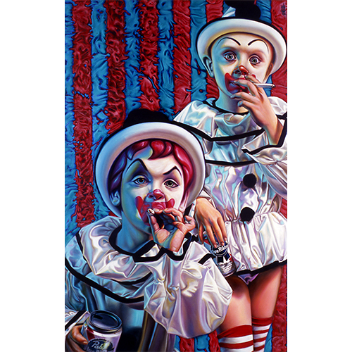
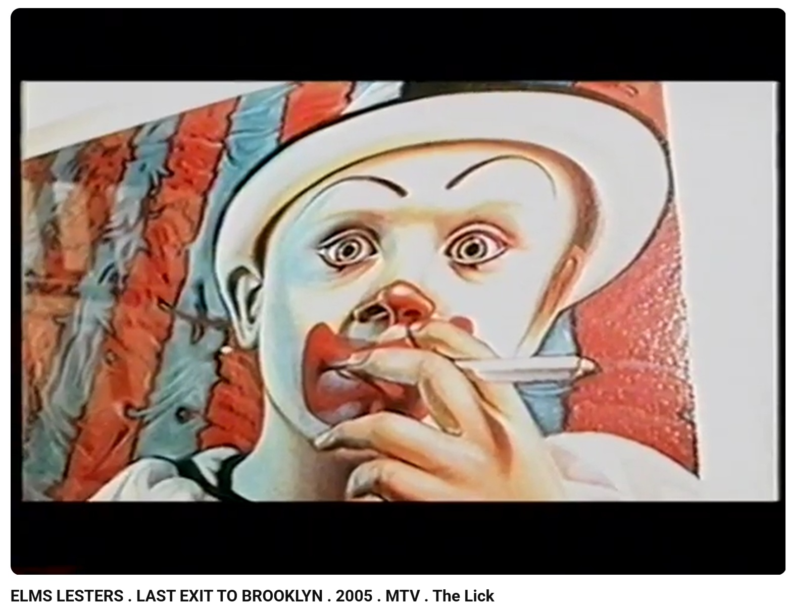

Exhibitions
Popaganda, Robert Berman Gallery, Santa Monica, California, US, through October 4, 2003.
Literature
Ron English, Son of Pop: Ron English Paints His Progeny (San Francisco, California: 9mm Books and The Shooting Gallery, 2007), p. 41. ISBN 978-0-9766325-1-1.
Ron English, Original Grin: The Art of Ron English (Paris: Cernunnos, 2019), p. 94. ISBN 978-2374950938.
Notes
Prints after this painting appear in Elms Lesters Painting Rooms’ YouTube videos Last Exit to Brooklyn: New York's Counter Culture and Don't Do That.
This composition also appears as one of the images included in The McSupersized Portfolio, a portfolio of four giclée prints featuring images used in the film Super Size Me.
A poster reproducing Clown Kids Smoking appears in online circulation.
Ancillary Documentation
The following materials document related print appearances, portfolio reproduction, and image-bearing online circulation.



Selected Online Circulation
Selected examples of the work’s online circulation, reproduction, or discussion. This list is not exhaustive; it is intended to document representative appearances of the image beyond formal exhibition and publication records.